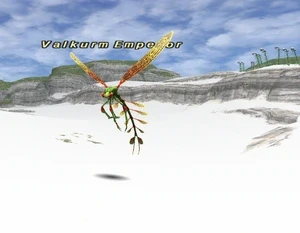
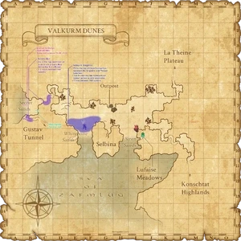

Level 75 reference · Zenith rules
|
Family: Flies Notorious Monster |
 |

| Zone | Level | Drops | Steal | Spawns | Notes |
|---|---|---|---|---|---|
| Valkurm Dunes | 29 - 30 | 1 | A, L, H | ||
|
HP = Detects Low HP; M = Detects Magic; Sc = Follows by Scent; T(S) = True-sight; T(H) = True-hearing JA = Detects job abilities; WS = Detects weaponskills; Z(D) = Asleep in Daytime; Z(N) = Asleep at Nighttime | |||||


Notes
- Lottery Spawn from Damselfly in the area spanning (D-8) to (F-8).
- Window opens 60 minutes from its last Time of Death, but can take several hours until it spawns on death of PH spawns.
- The placeholder appears on Widescan as the first Damselfly in the group of four between the second set of Snippers and Thread Leeches.
- Wide Scan II can reach all possible spawn points for both the placeholder and Valkurm Emperor if used by the palm trees in the lower-left corner of (F-8).
- The NM appears below the other three flies and before the Thread Leeches on Widescan.
- Damselfly respawns every 5 minutes (2 hours and 7 minutes Vana'diel time).
- Will link with other flies in the area, and the flies will link with Valkurm Emperor.
- Soloable by all jobs at level 35 and by most jobs at level 30, with some difficulty; Duoable by Beastmaster at level 25. Soloable by Beastmaster Lv24.
- See testimonials.
Adapted from Eden Wiki: Valkurm Emperor · Contributors and history · CC BY-SA 4.0. Revision 46816. Layout, links and optional background text adapted for Zenith.